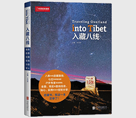

入藏八线

| 作者: 才华烨 著 | 开本: 16开 |
| 出版社: 北京联合出版公司 | 纸张: 纯质纸 |
| 出版时间: 2019-03 | 页数: 256页 |
| 版次: 1 | 字数: 320千字 |
| ISBN: 9787550272743 | 定价: 68.00 |
| 分类: 地理 | 装帧: 平装 |
内容简介:
本书是一部系统梳理和挖掘入藏的八条路线的旅游图书。青藏高原高奇险峻，进藏之路宛若登天。从古至今，人们走出了哪几条入藏道路？它们在哪儿，地理分布又有什么玄机？每条道路的特色景观和独到体验是什么？旅行者如何找到适合自己的那条路…… 本书重新挖掘了三条入藏历史古道：鲜为人知的克里雅古道，清朝的官道——川藏驿道，文成公主入藏与唐朝外交官王玄策出藏的国际线路——唐竺古道，让古道重生，璀璨重现；同时对5条传统入藏线路——川藏南线、川藏北线、青藏线、滇藏线和新藏线进行了梳理，将各线路特点及沿途每一站的精彩，悉数奉献给读者。
作者简介:
才华烨，毕业于天津师范大学中文系新闻专业，共产党员，现为中国国家地理杂志社副社长、新媒体CEO，富有20多年新闻媒体从业经验，15年媒体企业高层管理经验。在中国国家地理杂志社的15年期间，对青藏高原情有独钟，足迹遍布西藏、青海、云南、四川、甘肃藏区，曾经三次带队深入阿尔金山自然保护区，是国内极少数抵达阿尔金无人区三大湖泊的女性媒体人，并多次行走在进藏的各条路线上。
Copyright © 2018-2020 徐悦佳. All rights reserved.